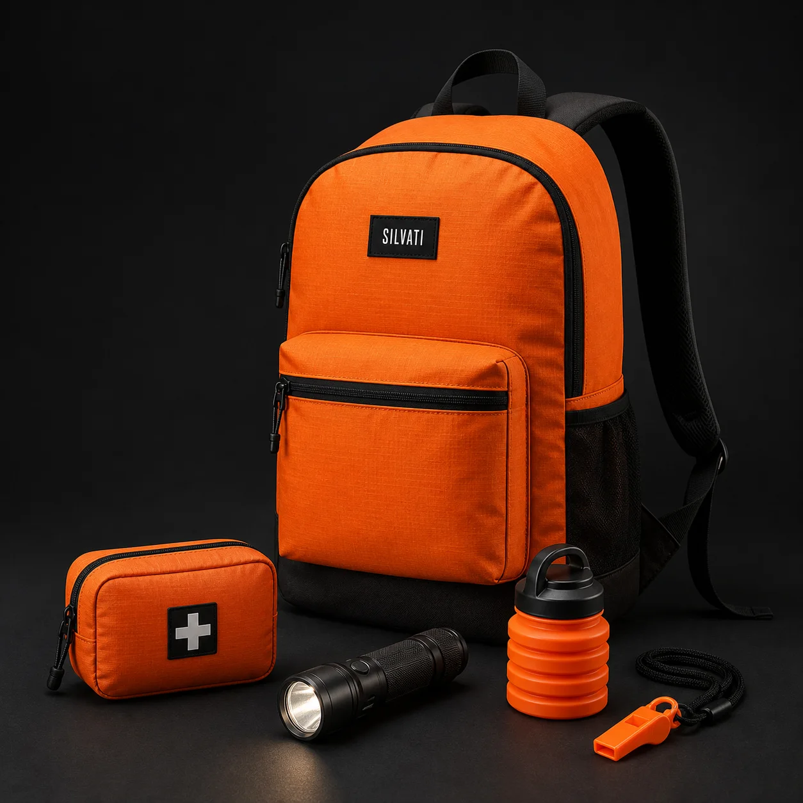
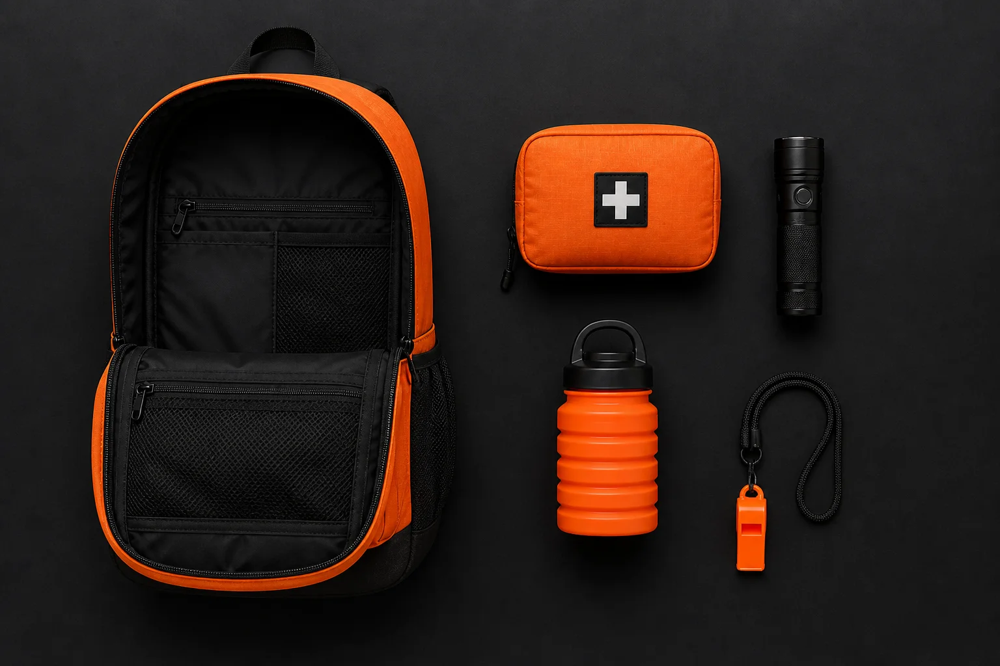
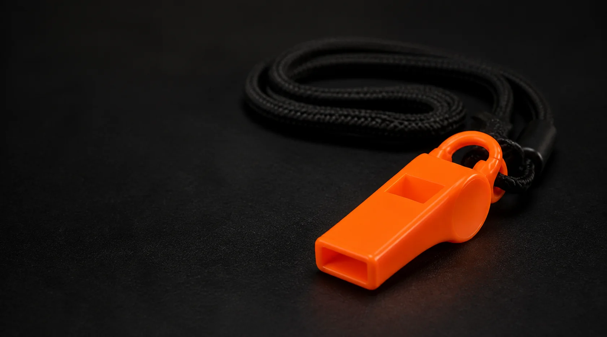

Preparación organizada
Reduce la dispersión de los recursos esenciales y permite revisarlos en un solo lugar.
01 Preparación esencial
Mochila de emergencia SILVATI con recursos básicos para organizar tu respuesta, brindar apoyo inicial y emitir una señal audible cuando no hay cobertura.

Los imprevistos no avisan.
Una interrupción de servicios, una evacuación, un viaje o una excursión pueden exigir decisiones rápidas. SILVATI reúne en una sola mochila recursos básicos que ayudan a mantener el orden, actuar con mayor claridad y hacerse escuchar.
03 / Producto estrella
Diseñada para mantener reunidos y transportables los elementos esenciales de una respuesta inicial. Su configuración combina un kit básico de emergencia con el silbato SILVATI como recurso prioritario de señalización.
Reduce la dispersión de los recursos esenciales y permite revisarlos en un solo lugar.
Facilita el traslado del kit en el hogar, vehículo, oficina, viaje o excursión.
Ayuda a identificar qué elementos están disponibles y cuáles requieren reposición.
Integra el silbato SILVATI para solicitar atención o apoyo cuando no hay cobertura.
04 / Qué incluye
Una configuración compacta que reúne recursos esenciales de organización, primeros auxilios, iluminación, hidratación y señalización.

Organiza, protege y transporta el conjunto.
Un solo punto para guardar, revisar y trasladar los recursos esenciales.Apoyo inicial ante incidentes menores mientras se busca asistencia.
Diseñado para mantener los artículos de apoyo básico reunidos y accesibles.Emite una señal audible y permite comunicar el patrón internacional SOS.
Compacto, ligero y acompañado de un cordón para llevarlo siempre a mano.Apoya la visibilidad en ausencia de iluminación.
Recargable por USB para facilitar su mantenimiento y reutilización.Transporta agua de forma compacta.
Su diseño plegable ayuda a ahorrar espacio cuando no está en uso.05 / Silbato SILVATI
El silbato SILVATI es el componente protagonista del kit. Su función es producir una señal audible que puede ayudar a llamar la atención y orientar la búsqueda.

El silbato ayuda a emitir una señal audible; no garantiza el rescate. Debe utilizarse junto con planificación y protocolos de emergencia.
06 / Uso responsable
Guárdala en un punto accesible, conocido por las personas del hogar, vehículo u organización.
Comprueba periódicamente la integridad, carga, caducidad y disponibilidad de cada componente.
El botiquín ofrece apoyo inicial ante incidentes menores; no reemplaza capacitación ni asistencia sanitaria.
Aprende el patrón SOS sin activar sonido automático: tres cortos, tres largos y tres cortos.
07 / Empresas e instituciones
Soluciones para empresas, instituciones educativas, hoteles, comunidades, fundaciones, gobiernos locales, brigadas y distribuidores.
Solicita una propuesta corporativa08 / Nosotros
Preparación. Señal. Rescate.
SILVATI nace para convertir la prevención en una práctica clara, organizada y fácil de llevar. La marca reúne recursos básicos para situaciones imprevistas y pone la señalización audible en el centro de la preparación.
Nuestro enfoque es técnico, humano y responsable: sin promesas absolutas, sin alarmismo y con información que siempre debe coincidir con el producto real.
09 / Guía esencial
Memoriza el patrón y úsalo de manera responsable para llamar la atención.
Ver señal SOS ↗Comprueba carga, integridad, cantidades y fechas antes de necesitarlo.
Ver rutina ↗Elige un lugar accesible y comunica su ubicación a quienes comparten el espacio.
Ver recomendaciones ↗10 / Preguntas frecuentes
Es una solución compacta y organizada para mantener a mano recursos básicos de emergencia. Su configuración final debe corresponder exactamente al inventario físico vendido.
No. El kit básico de primeros auxilios está destinado al apoyo inicial ante situaciones menores. No sustituye la capacitación, la valoración sanitaria ni los servicios de emergencia.
Ayuda a emitir una señal audible para llamar la atención u orientar una búsqueda. No garantiza el rescate y debe usarse junto con planificación y protocolos de emergencia.
Sí. SILVATI ofrece atención corporativa, pedidos por volumen y oportunidades para distribuidores.
11 / Contacto
Cuéntanos si buscas información personal, familiar, corporativa o de distribución.